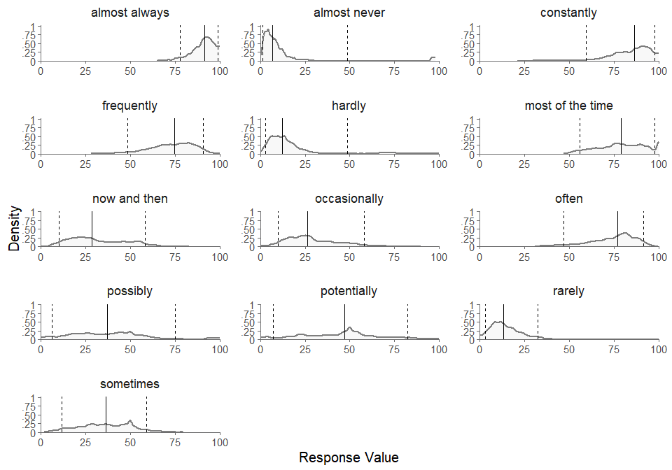
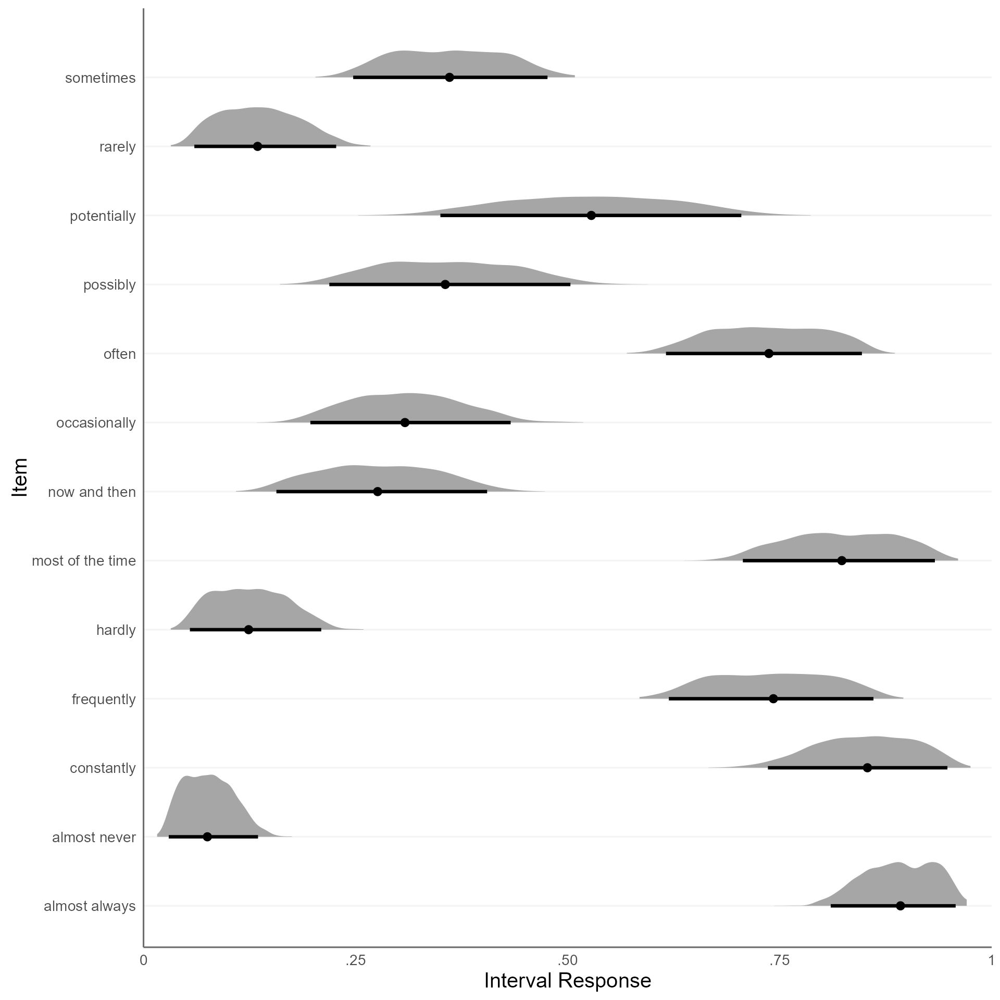

Interval Consensus Model
Estimation of Weighted Consensus Intervals for Interval Ratings
Source:vignettes/01-Interval-Consensus-Model.Rmd
01-Interval-Consensus-Model.RmdWe want to fit the Interval Consensus Model to the Verbal Quantifiers dataset.
First, we load the verbal quantifiers dataset:
packages <- c("dplyr", "kableExtra")
# load packages and install if not available
for (pkg in packages) {
if (!requireNamespace(pkg, quietly = TRUE)) {
install.packages(pkg)
}
library(pkg, character.only = TRUE)
}
data(quantifiers)
quantifiers <- quantifiers |>
# exclude control items
dplyr::filter(!name_en %in% c("always", "never", "fifty-fifty chance")) |>
# sample 100 respondents
dplyr::filter(id_person %in% sample(
size = 30,
replace = FALSE,
unique(quantifiers$id_person)
)) |>
# exclude missing values
dplyr::filter(!is.na(x_L) & !is.na(x_U)) |>
# recompute IDs
dplyr::mutate(
id_person = factor(id_person) |> as.numeric(),
id_item = factor(id_item) |> as.numeric()
)
head(quantifiers) |>
kable(digits = 2) |>
kable_styling()| id_person | id_item | name_ger | name_en | truth | scale_min | scale_max | width_min | x_L | x_U |
|---|---|---|---|---|---|---|---|---|---|
| 1 | 1 | ab und zu | now and then | NA | 0 | 100 | 0 | 28 | 35 |
| 1 | 2 | eventuell | possibly | NA | 0 | 100 | 0 | 10 | 24 |
| 1 | 3 | fast immer | almost always | NA | 0 | 100 | 0 | 93 | 99 |
| 1 | 4 | fast nie | almost never | NA | 0 | 100 | 0 | 1 | 20 |
| 1 | 5 | gelegentlich | occasionally | NA | 0 | 100 | 0 | 19 | 40 |
| 1 | 6 | haeufig | frequently | NA | 0 | 100 | 0 | 76 | 93 |
What does the dataset look like? We can visualize the interval
responses using the plot_intervals_cumulative function:
plot_intervals_cumulative(
lower = quantifiers$x_L,
upper = quantifiers$x_U,
min = quantifiers$scale_min,
max = quantifiers$scale_max,
cluster_id = quantifiers$name_en,
weighted = TRUE
)
#> Warning: Removed 390000 rows containing missing values or values outside the scale range
#> (`geom_vline()`).
Next, we need to convert the interval responses to the simplex format:
quantifiers <- cbind(
quantifiers,
itvl_to_splx(quantifiers[,c("x_L","x_U")], min = quantifiers$scale_min, max = quantifiers$scale_max))
head(quantifiers[,9:13]) |>
round(2) |>
kable() |>
kable_styling()| x_L | x_U | x_1 | x_2 | x_3 |
|---|---|---|---|---|
| 28 | 35 | 0.28 | 0.07 | 0.65 |
| 10 | 24 | 0.10 | 0.14 | 0.76 |
| 93 | 99 | 0.93 | 0.06 | 0.01 |
| 1 | 20 | 0.01 | 0.19 | 0.80 |
| 19 | 40 | 0.19 | 0.21 | 0.60 |
| 76 | 93 | 0.76 | 0.17 | 0.07 |
Let’s check if we can apply the Isometric Log-Ratio transformation:
try(ilr(quantifiers[,c("x_1","x_2","x_3")]))
#> Error in check_simplex(simplex[i, ]) :
#> Error: None of the elements in the (row-)vector must be exactly 0! Please apply padding first!It seems we have components in our simplex data that are zero. So we first have to deal with these zero components. We can do this by adding a padding constant:
quantifiers[, c("x_1", "x_2", "x_3")] <-
remove_zeros(quantifiers[, c("x_1", "x_2", "x_3")], padding = 0.01)
head(quantifiers[,9:13]) |>
round(2) |>
kable() |>
kable_styling()| x_L | x_U | x_1 | x_2 | x_3 |
|---|---|---|---|---|
| 28 | 35 | 0.28 | 0.08 | 0.64 |
| 10 | 24 | 0.11 | 0.15 | 0.75 |
| 93 | 99 | 0.91 | 0.07 | 0.02 |
| 1 | 20 | 0.02 | 0.19 | 0.79 |
| 19 | 40 | 0.19 | 0.21 | 0.59 |
| 76 | 93 | 0.75 | 0.17 | 0.08 |
fit <-
fit_icm(
df_simplex = quantifiers[, c("x_1", "x_2", "x_3")],
id_person = quantifiers$id_person,
id_item = quantifiers$id_item,
item_labels = quantifiers |>
dplyr::distinct(id_item, name_en) |>
dplyr::pull(name_en),
link = "ilr",
padding = .01,
n_chains = 4,
n_cores = 1,
iter_sampling = 500,
iter_warmup = 300,
adapt_delta = .9,
refresh = 0,
verbose = TRUE
)
#>
#> CHECKING DATA AND PREPROCESSING FOR MODEL 'icm_ilr' NOW.
#>
#> COMPILING MODEL 'icm_ilr' NOW.
#>
#> STARTING SAMPLER FOR MODEL 'icm_ilr' NOW.
#> Warning in validityMethod(object): The following variables have undefined
#> values: Y_ppc_splx[264,2],The following variables have undefined values:
#> Y_ppc_loc_splx[264],The following variables have undefined values:
#> Y_ppc_wid_splx[264]. Many subsequent functions will not work correctly.
#> Warning: Bulk Effective Samples Size (ESS) is too low, indicating posterior means and medians may be unreliable.
#> Running the chains for more iterations may help. See
#> https://mc-stan.org/misc/warnings.html#bulk-essNow we can extract the estimated cosensus intervals from the fit object. The function returns a list containing the posterior samples and a summary table of the consensus intervals stemming from the posterior medians.
consensus <- extract_consensus(fit, print_summary = FALSE)
attributes(consensus)
#> $names
#> [1] "df_rvar" "summary"If we want to get a summary of the consensus intervals, we can use
the summary function, which is a wrapper function around
extract_consensus.
| T_L_median | T_L_CI_025 | T_L_CI_975 | T_U_median | T_U_CI_025 | T_U_CI_975 | |
|---|---|---|---|---|---|---|
| now and then | 0.17 | 0.13 | 0.22 | 0.39 | 0.33 | 0.45 |
| possibly | 0.15 | 0.10 | 0.22 | 0.43 | 0.34 | 0.53 |
| almost always | 0.86 | 0.83 | 0.89 | 0.98 | 0.97 | 0.99 |
| almost never | 0.02 | 0.01 | 0.03 | 0.10 | 0.08 | 0.14 |
| occasionally | 0.15 | 0.12 | 0.19 | 0.39 | 0.32 | 0.48 |
| frequently | 0.65 | 0.61 | 0.69 | 0.92 | 0.89 | 0.94 |
| hardly | 0.04 | 0.02 | 0.05 | 0.17 | 0.14 | 0.21 |
| sometimes | 0.23 | 0.17 | 0.29 | 0.48 | 0.41 | 0.55 |
| most of the time | 0.71 | 0.67 | 0.76 | 0.93 | 0.90 | 0.95 |
| often | 0.67 | 0.61 | 0.73 | 0.89 | 0.85 | 0.93 |
| potentially | 0.32 | 0.24 | 0.41 | 0.64 | 0.53 | 0.75 |
| rarely | 0.05 | 0.03 | 0.06 | 0.18 | 0.14 | 0.22 |
| constantly | 0.78 | 0.73 | 0.83 | 0.98 | 0.96 | 0.99 |
We can also plot the estimated consensus intervals. The generic
function plot calls the function
plot_consensus with the default method
median_bounds.
plot(fit, method = "median_bounds")
We can call the function plot_consensus directly for the
alternative plotting method draws_distribution, which plots
the consensus intervals based on the posterior draws. For every
posterior draw, a sample is drawn from a uniform distribution using the
respective interval bounds of the posterior draw as minimum and maximum.
The result is adistribution of consensus values from the respective
consensus interval, which is visualized in the plot. The argument
CI specifies the credible interval for the error bars.
plot_consensus(fit, method = "draws_distribution", CI = .95)
Using twi CIs:
plot_consensus(fit, method = "draws_distribution", CI = c(.5, .95))